Rank the alerts, not just label them
Each alert is either dismissed or escalated. For every test alert we predict the probability of escalation. The score is ROC-AUC: it only checks the ordering. It asks how often a random escalated alert is ranked above a random dismissed one. 0.5 is a coin flip, 1.0 is perfect.
- Explore the data and answer basic questions with numbers: size, balance, time, leakage.
- Summarise each alert's transactions (hundreds per alert) into one row of features.
- Validate honestly: stratified 5-fold cross-validation, repeated on 5 different random splits. A feature group is kept only if it adds more than 0.002 AUC.
- Explain the final model with SHAP and check that it makes sense in anti-money-laundering (AML) terms.
Confidentiality. The data is under NDA. This site shows only charts and aggregated statistics — no raw rows, no alert IDs, no data files.
Twenty thousand alerts, ten million transactions
| Train | Test | |
|---|---|---|
| Alerts | 14,000 | 6,000 |
| Transactions | 6,987,663 | 3,027,575 |
| Alert dates | 2025-01-01 … 2026-12-31 | 2025-01-01 … 2026-12-31 |
| Label | escalated (1) / dismissed (0) | — (to predict) |
- Each transaction has a timestamp, a direction, a type and a standardised amount index. As a share of all train transactions: incoming 75.7%; card 53.8%, bank transfer 39.4%, cash 6.3%, international 0.5%.
- 0 missing values. Every alert has at least one transaction. No alert appears in both train and test.
- Transactions per alert: min 1, median 461, max 2,279. History length: median 179 days, so almost every alert comes with a full ~6-month window. Only 157 alerts have less than 30 days.
- Leakage check: 0 transactions after the alert day. 840 transactions fell later on the alert day, in just 21 train alerts. We dropped them because their timing relative to the alert is ambiguous.
- Shared customers? Across all 20,000 alerts there are 0 exact duplicate transactions, and no pair of alerts shares more than 3 timestamps outside the pre-alert burst. No sign of one customer behind several alerts, so plain stratified folds are safe.
One in six alerts is escalated, and that rate barely moves
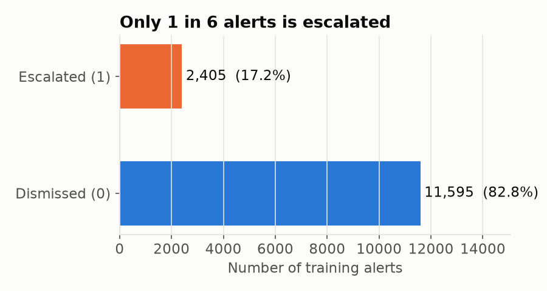
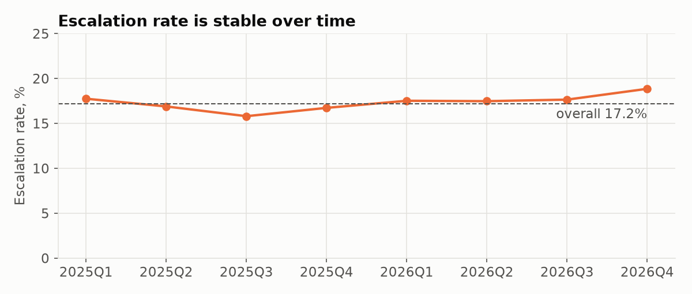
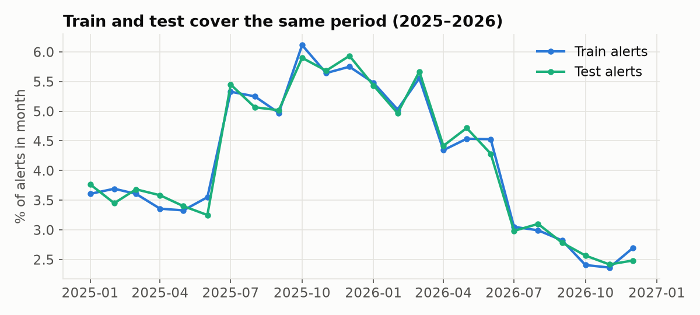
Almost every alert ends with a three-minute flurry
The most striking structure in the data: 551,899 transactions (7.9% of all) sit in the last 15 minutes before midnight of the alert date. 13,848 of 14,000 alerts (98.9%) have this burst, with a median of 31 transactions. It is extremely tight: 548,712 transactions fall within 5 minutes of midnight, only 44 in the 5–10 minutes before that, and a typical burst lasts 172 seconds. It looks like the event that triggered the alert.
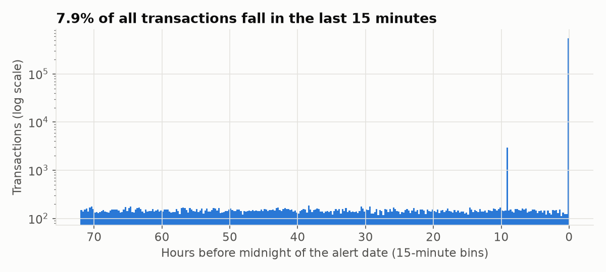
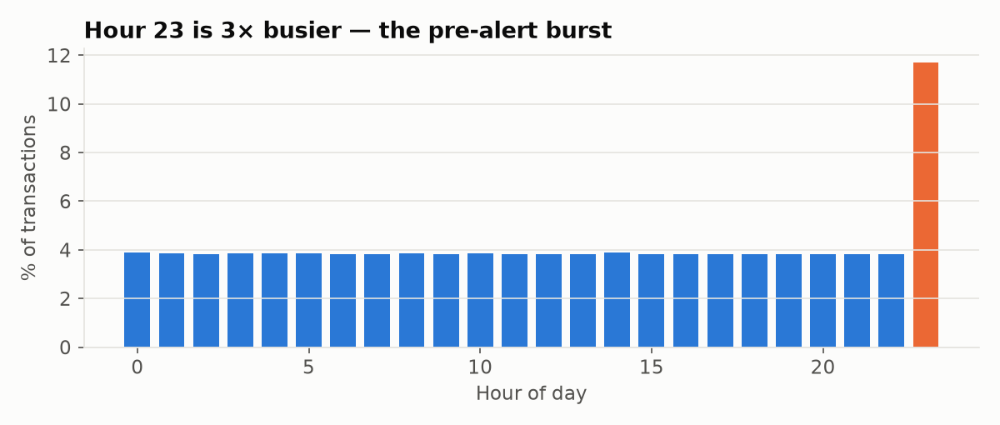
But the burst does not separate the classes. Its size alone has AUC 0.513, and a whole group of 22 burst features added only +0.0003. Almost every alert has one, escalated or not. See what didn't work.
Escalated and dismissed alerts look almost the same, on average
The EDA's main lesson was humbling: simple averages barely tell the classes apart. Every single simple feature had an AUC between 0.502 and 0.548.
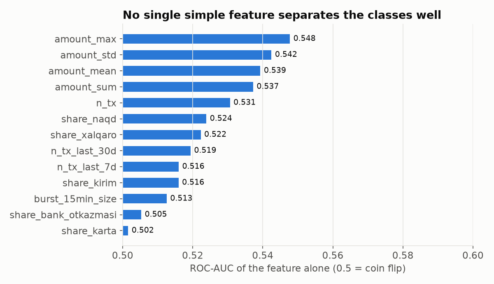
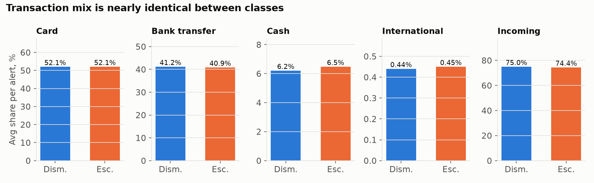
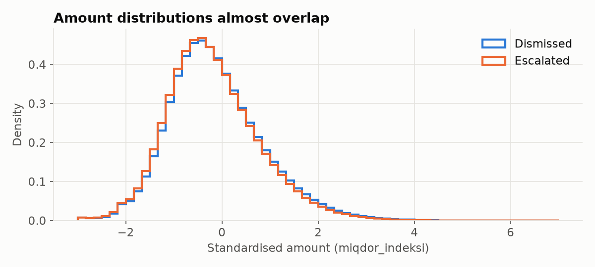
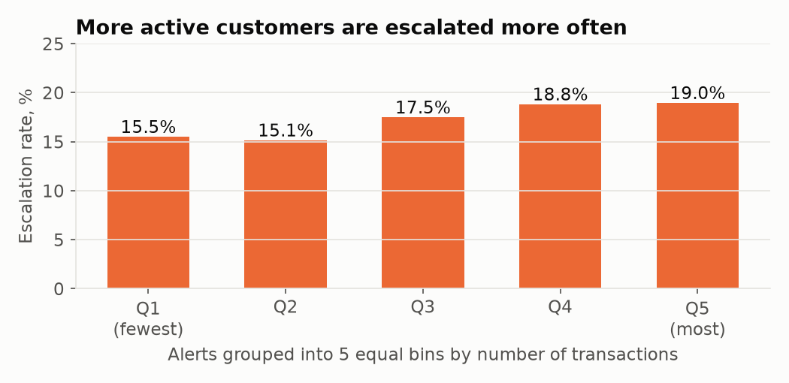
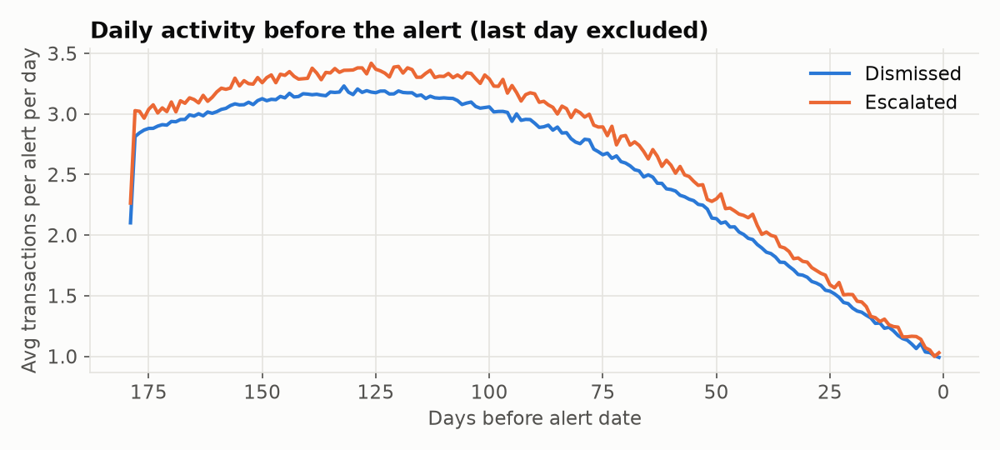
Where the difference really hides
Amounts only mean something within a transaction type: an international transfer averages an index of about 2, an incoming card payment about −0.5. When we compared amounts type by type, a clear pattern appeared. Per-alert medians, dismissed vs escalated:
- mean outgoing bank transfer: 0.299 vs 0.122;
- mean incoming bank transfer: 0.125 vs 0.002;
- number of outgoing cash transactions: 6 vs 7.
Escalated customers move money in smaller pieces. In AML this is the classic structuring typology: splitting a large sum into many small transactions to stay under reporting thresholds.
From 11 features to 110, one tested group at a time
Every group came from an EDA observation or an AML typology and was added only if it improved cross-validated AUC by more than 0.002. The final set is 110 features in four groups:
| Group | What it measures | Why (EDA) | Effect |
|---|---|---|---|
| Base (11) | count, sum / mean / max / min / std of amounts, type and direction shares | starting point | 0.5979 |
| A · amount shape (33) | quantiles, spread, skew, kurtosis; shares of very small / large amounts | averages overlap, so look at the shape | +0.0108 |
| E · type × direction (24) | count, share and mean amount for each of the 8 combinations (e.g. incoming cash) | amounts only comparable within a type | +0.0232 |
| F · shape within type × direction (42) | min, max, median, 10th/90th percentile, spread, skew for 6 combinations | structuring = many similar small amounts | +0.0096 |
International transactions were skipped in group F: fewer than half of the alerts have 5 or more of them, so their statistics would be noise.
Cross-validated ROC-AUC, mean over 5 random splits
Final model: one LightGBM gradient-boosted tree model with 8 leaves per tree, learning rate 0.01 and 508 trees. CV ROC-AUC 0.6465 ± 0.0160 on the main split, 0.6480 on average over 5 splits. The final notebook rebuilds the submission from the raw files, and a re-run produces a byte-identical file.
It watches how customers move money through bank transfers
SHAP splits each prediction into contributions from individual features. Positive values push an alert towards escalated, negative towards dismissed. By group, 60.3% of the model's attention goes to group F (amount shape within type × direction), 18.4% to E, 15.3% to A and 6.1% to the base features. Seven of the top-15 features describe bank transfers.
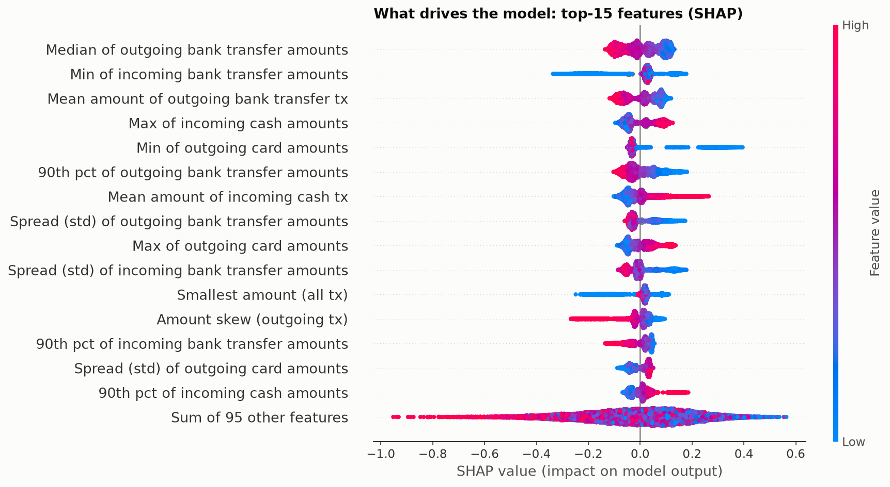
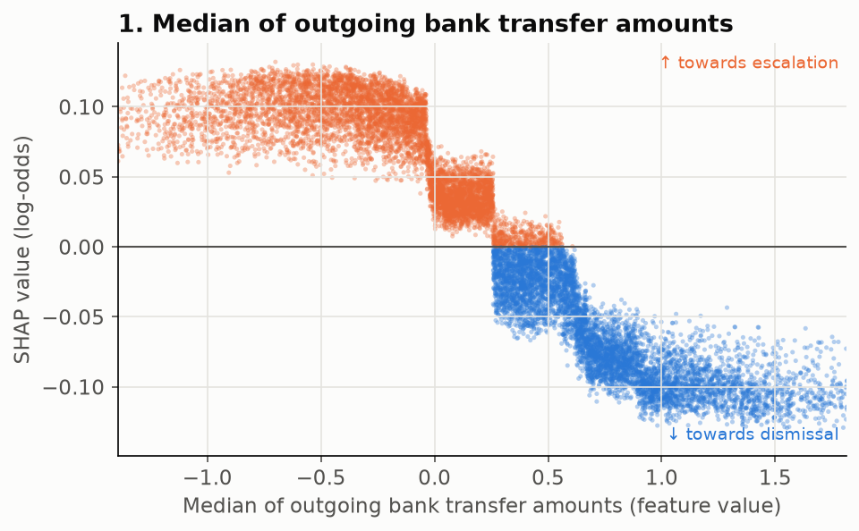
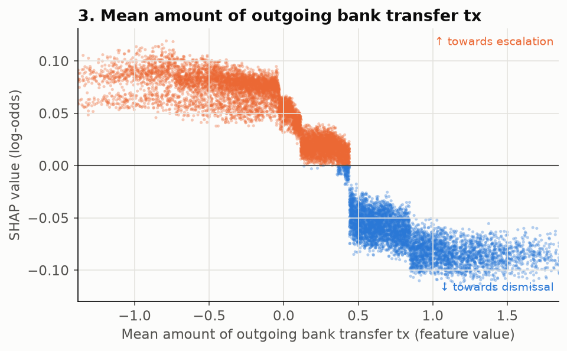
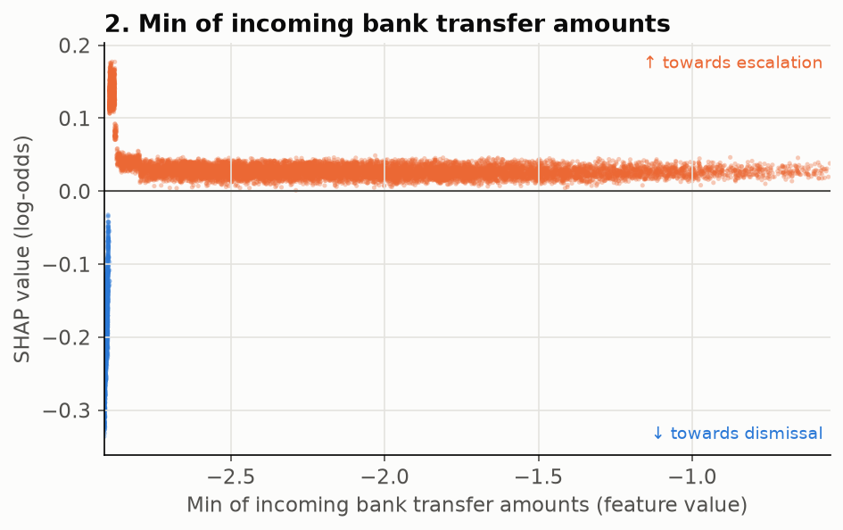
Two individual decisions
Two typical cases: an escalated alert ranked at the 90th percentile of escalated scores, and a dismissed alert at the 10th percentile of dismissed scores. Only the contributions are shown, not the customers' actual values.
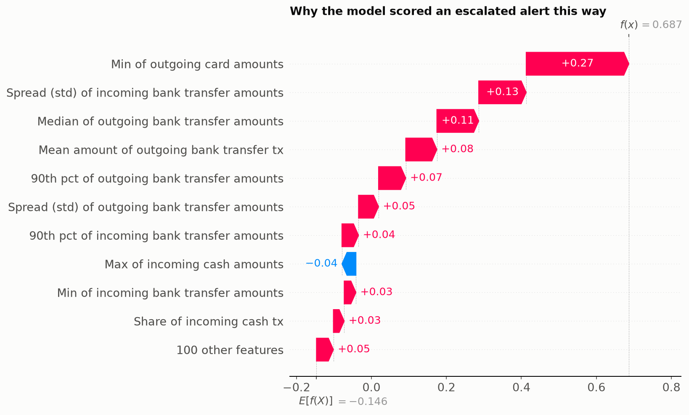
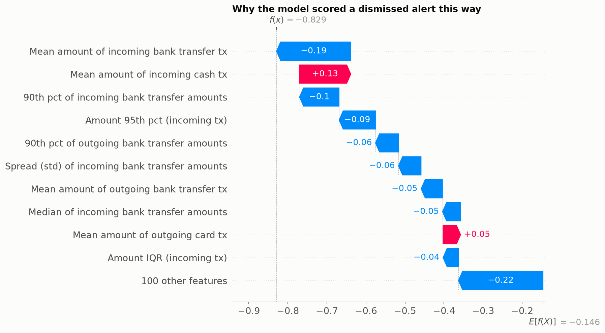
Good AML ideas that this data did not reward
Each idea below was built, tested on the same folds and dropped because it did not beat the 0.002 bar. We think reporting them matters as much as the wins.
The pre-alert burst +0.0003
22 features on the burst's size, mix and amounts vs history. Re-tested on top of the stronger feature set: −0.0014. Nearly every alert has a burst, so it does not discriminate.
Transit / pass-through −0.0004
Money in, then out within 1 h or 24 h; share of money passed through; running balance. A textbook laundering pattern, but no gain here (−0.0001 in the second pass).
Rhythm & time of day −0.0002
Gaps between transactions, active days, peaks per day and hour, night and weekend shares, 24 hourly shares. −0.0022 in the second pass.
Behaviour change −0.0016
Last 7 / 30 days vs the whole history, second half vs first half, monthly trend. −0.0020 in the second pass.
CatBoost −0.0059
A second gradient-boosting library on the same 110 features: 0.6422, worse than LightGBM on 5/5 splits.
Blending & seed averaging −0.0011 … −0.0033
Rank-averaging LightGBM with CatBoost was worse at every weight (0.3 / 0.5 / 0.7). Averaging 5 LightGBM seeds gave −0.0004.
A lesson in honest validation. Our first baseline stopped training on each fold's own validation data and ended after 1–2 trees. Its score looked fine (0.5804), but the out-of-fold AUC was only 0.5617. We switched to one shared number of trees for all folds. From then on the mean fold score and the out-of-fold score agreed (e.g. 0.6465 vs 0.6460).
Putting every group in together (141 features) scored 0.6273, below the 68-feature set at that stage (0.6318). More features also meant more noise.
Weak signal, honest gains, a pattern that makes sense
- The task is hard: no simple statistic gets beyond AUC 0.548. The final model reaches 0.648 (from a 0.601 baseline, both averaged over 5 splits). The ranking is better than chance, but far from perfect.
- The gain came from comparing amounts within each transaction type and direction, not from more data or bigger models.
- What the model learned matches a known AML typology: escalated customers make smaller, more fragmented bank transfers and larger cash deposits, consistent with structuring.
- Every kept change was confirmed on 5 random splits. Every dropped idea is listed above. The whole pipeline is reproducible from the raw files with a fixed seed.
Credits
- Libraries: pandas, NumPy, PyArrow, SciPy, scikit-learn, Matplotlib, Jupyter.
- LightGBM — Ke et al., 2017, LightGBM: A Highly Efficient Gradient Boosting Decision Tree, NeurIPS.
- CatBoost — Prokhorenkova et al., 2018, CatBoost: unbiased boosting with categorical features, NeurIPS (tested, not in the final model).
- SHAP — Lundberg & Lee, 2017, A Unified Approach to Interpreting Model Predictions, NeurIPS.
- American Express — Default Prediction, Kaggle competition (2022): aggregating customer history into per-customer features. kaggle.com
- Feedzai — Anti-Money Laundering Alert Optimization Using Machine Learning with Graphs. arXiv:2112.07508
- Dataiku — AML Alerts Triage solution. knowledge.dataiku.com
- FATF — money-laundering typology reports (structuring, pass-through, cash and cross-border activity). fatf-gafi.org
- AI tools: Claude Code (Anthropic) was used as a coding assistant for analysis, experiments and this site.